Hello fujisan
A detour to shimizu
It's 8h00 pm on a cold dark winter night, we are outside of Shimizu harbor motoring in circles and waiting for a response from Shimizu Port Control. The temperature is 4C, the wind is blowing hard and our clothes are wet and caked with salt. We’re tired and hungry, waiting for permission to enter the Port. Prior to this, we just had a very, very rough 4 day passage, riding under 30-40 knot winds on the nose. This passage was a true test of strength, for us and for Pino, but first let’s go back and see exactly what happened…
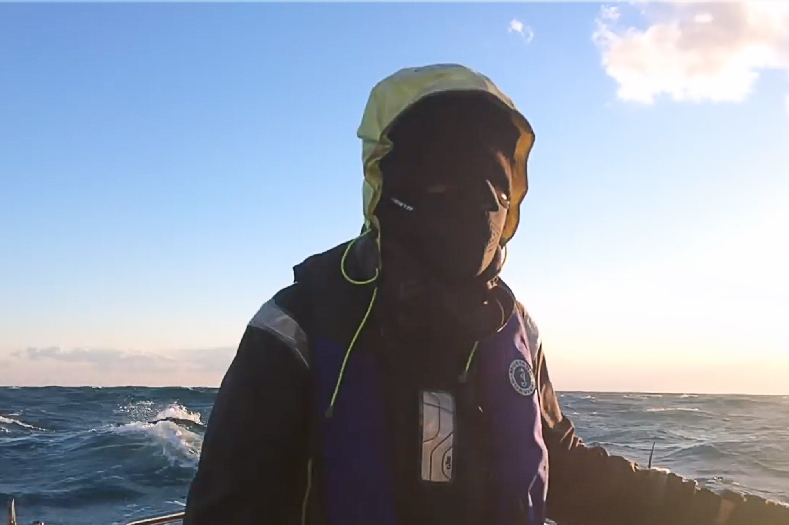We'd planned to go to Wakayama, riding on the back of a passing low with winds from the NE, shifting to the S and then to the SW, but the wind decided to turn earlier making it impossible for us to go east. We found ourselves close-reaching in 40 knot winds, heading straight north. Looking at the weather we could see that it would blow from the W for 3-4 days, so we made a new plan to head to Omaezaki. We'd read of other sailors taking refuge there in big weather and thought it would be possible to go, but again, the wind kept pushing us further and further east. The next port on our list was Shimizu, tucked in deep into the bay. We were able to point Pino to the cape just past Shimizu, but we weren't sure if again the wind and current would allow us to make some easting.
At that point both of us were frozen solid. Wave after wave splashed over the boat and into the cockpit. The starboard rail was constantly submerged, our starboard side lee cloth was gone and the diesel bins were threatening to fall overboard. We had 3 reefs in our main, but 5 slides had snapped off (yet again), I wondered when the rest would break. If we lost the use of our main going forward would be impossible.
Inside the cabin was also chaos. The joker valve of our toilet decided to stop working. Problems, we've learned, always come in pairs. Toilet water kept backflowing and because we were on a starboard tack — the toilet being on the high side — it all came spilling on the floor. We learned then too that the drain on the floor facing the toilet was clogged, so the toilet water began to accumulate there and the smell was horrid. We did close the toilet inlet valve, but the pipe is long and keeps a surprisingly large amount of water. The dorads too were leaking badly, we put the covers on and even flipped them around but water still came leaking out. Water is patient, if there's a crack it'll find its way in.
We couldn't stand inside the boat because of the extreme tilt. The floor was slippery, wet with salt water. Doing anything inside required much care. There was no comfortable place to be, aside from a settee where we slept. The lee cloth kept us from falling out. Although eventually water began to trickle down onto our warm cocoon from the ceiling. Alas, our last stronghold against the wetness had been breached.
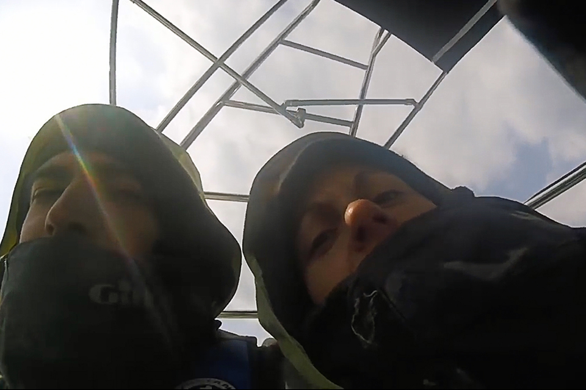We were both tired physically and mentally. We had no appetite, the smell of toilet didn't help.
We were in Sparta mode.
Both of us were scared we wouldn't make it. What if we couldn't make it to Shimizu? The port of Shimoda was next... but what if the wind didn't allow us to go there either? I imagined us getting pushed further and further east, past Shimoda, past Yokohama... and Tokyo. I wanted to believe we'd make it, but the last few days had been so horrible that it was hard to believe that things could be good again.
- "This whole sailing to Japan thing was a silly dream wasn't it? Why the hell did we think we could do this."
I wondered.
- "Pino, we're so sorry to have put you in this situation, you deserve better."
We were aiming for the point just east of Shimizu, with the blind hope of somehow being able to make some easting to get some shelter from the waves inside of the bay. The worse was yet to come, another danger lay ahead: a very busy shipping channel with cargo ships, fishing boats and other large vessels thundering up and down the coast at 10-15 knots. We had to cut through it to get to Shimizu. I swallowed hard, took a look at AIS to see if this was possible. We could see every ship, as well as their speed and if whether or not we were on a collision course. Our AIS alarm started beeping, signalling ships that are dangerously close, it did not stop beeping for many hours.
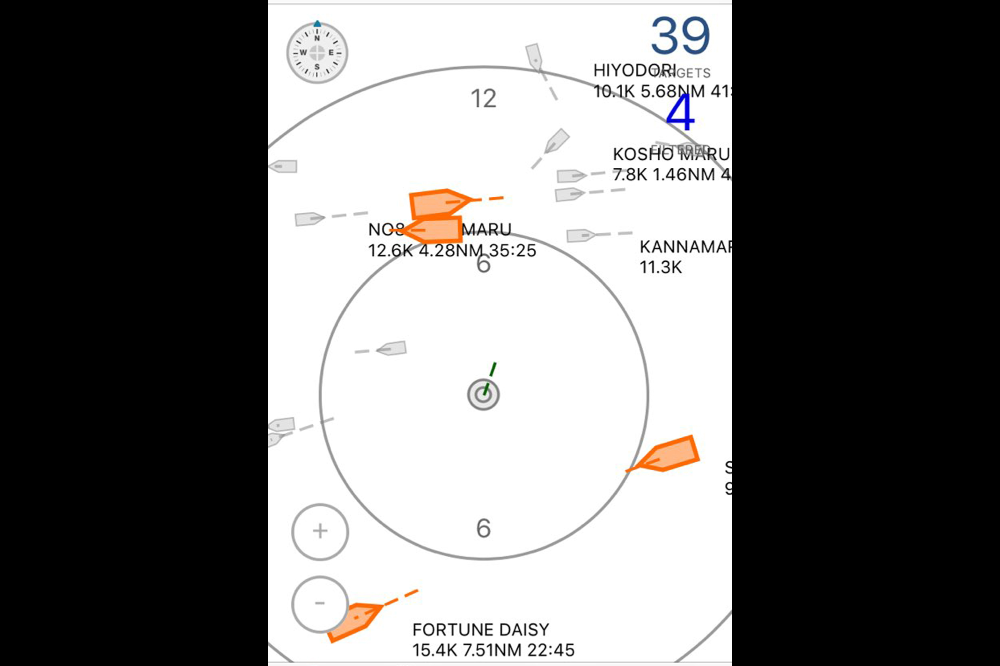This felt like the scene in Gattaca, when a myopic Jerome has to cross a busy highway without being able to see. Jerome jumped into the traffic and somehow made it out alive. That is what it felt like to cross that shipping lane. Some cargo ships altered course for us, but not all would, or could do this. Devine was driving while I stared at the AIS screen, trying to work us through it all, lying to myself saying that everything was going to be okay. I was counting the number of nautical miles to go before we were in the clear. At that point I was also afraid that the mountains around us would cause the wind to change direction, we were close-reaching and barely making it inside the bay, if the wind had too much north in it we’d be pushed further east still and we’d miss our target.
Instead of the wind shifting north it eased to the W again and permitted us to sail into the bay. We thought we’d be shielded from the waves in there, but the bay was very open and we were still getting pounded. Devine & I took turns at the tiller, whenever we got too cold to drive we’d switch places. We didn't feel great then, but something was helping us along, making us feel better and giving us hope. That thing was the sight of Mount Fuji, rising majestically in the distance.
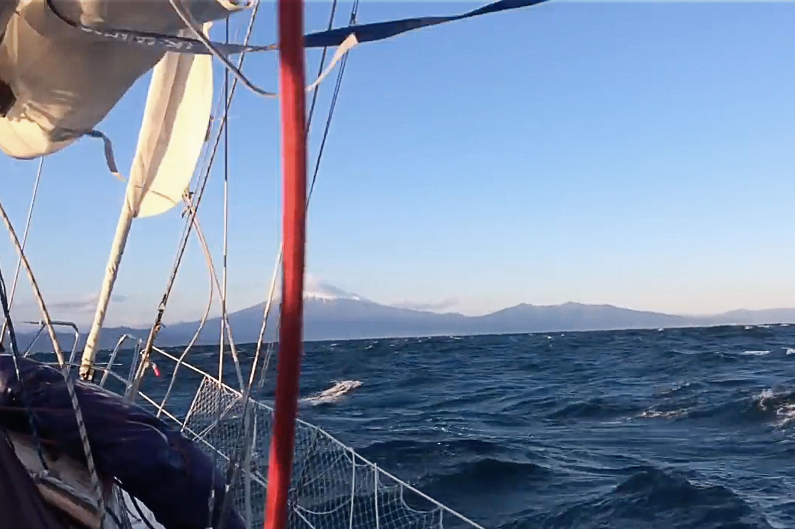The port of Shimizu was 20 NM from the bay entrance, we were doing good speed but it didn’t seem like we’d arrive before sunset. The sun eventually slipped below the horizon, just as we were getting near the port entrance. We were planning on getting into the breakwater and to find a place to dock, any place, and to alert the authorities of our arrival in the morning. I didn't have the contact info for this port but was confident that they wouldn't have a problem with us being here, considering this was a force majeure. I knew there was a marina in there, I had a rough idea of its layout as well as coordinates of a safe dock. That was my plan, to work our way onto that spot. At this point we just wanted to have a foot on land, to be in a safe place. When we got near the breakwater we rolled in the jib and started the engine. Just as we were coming in, we heard a call on the radio...
- “Pino, Pino, this is Shimizu port radio.”
This was our first time in a big Japanese port, we didn't expect anyone to hail us.
- “This is Pino.”
- “What is your intention Pino.”
- “We are going to Shimizu marina.”
- “Do you have a local agent?”
Neither of us knew what that meant — a local agent? I thought it may have been some mistranslation, we had the permits to get into any port in Japan. No one had ever told us anything about needing a local agent.
- “Hum, we don't have that.”
- “Then I am sorry, you cannot enter Shimizu Port.”
I froze. Devine & I were looking forward to resting and eating a proper meal for once, not just that, the sun was down and the night was very, very cold. I’d told Devine to not enter the harbor because we didn't have permission, he was driving Pino around in the circles in the quarantine area near the entrance while I was trying to sort this all out.
- “Our sail is damaged, we need a dock to make repairs!”
I was getting desperate then, the fatigue of the last 4 days of sailing in rough weather was weighing me down.
- “You need a local agent. I will give you a number so you can call.”
I groaned then.
- “I don’t have a phone number, I just got here!”
- “Okay. Then you’ll need to speak to the Coastguard.”
I called the coastguard on the radio then, but they were treating us like they would a large cargo ship. The questions she asked didn’t apply to us. When I tried to explain our situation she just apologized, I’d reached the limit of her English and she left the channel.
- “The FUCK was THAT!!”
I was beyond angry at that point, frustrated by Japanese bureaucracy. I could hear Devine outside then...
- “The hell is going on?!”
- “Coastguard hung up on me! They won’t let us into the port.”
Devine was shivering violently and was also short on patience.
- “What? No way we're staying out here. Take the tiller, I’ll speak to them!”
Devine was alternating speaking to the Shimizu port radio and the Coastguard. About 15 minutes later, Devine told me to head into port and gave me a set of coordinates.
- “We can bring Pino to this berth. They said it was next to a boat called Dawn Treader.”
- "How the hell did you get permission?”
Devine told them it was a force majeure, that we had repairs to do and that we had no other options. He also said that we had all the necessary papers and even gave them references of people we knew in Japan (contacts of other Japanese sailors we'd met in Ogasawara). All in all, we wanted to say the same thing but Devine said it in a way that was concise, important when dealing with people with english as their second language.
- “I said what they wanted to hear, that’s all. Got us in didn't I?”
I have so much love for this human, and remember thinking how lost I'd be without him. Devine, my savior. Going back out there was not an option for us, we knew we couldn’t take another night at sea.
We motored past the breakwater and inside of the Port of Shimizu. The coordinates that they’d given us brought us to the marina, but not at a dock. We thought this was a mistake and so we circled around the marina a few times to try and find the boat named Dawn Treader — no luck. It was hard to see the names in the dark. We slipped into a random berth and decided to try and find the boat on foot. As soon as we docked, we got another call from the port radio.
- “You’re in the wrong slip.”
They were keeping an eye on us with AIS and could see we weren’t where we were supposed to be. We’d assumed the coordinates were wrong, but in truth we’re the ones who’d messed up. The dock in question was a public dock, a concrete wall. We assumed it wasn’t a place where we could dock because there there was a large 100 foot yacht on it, with colored lights in the rigging. We didn’t think that this boat was Dawn Treader, it looked like a show-boat — they failed to tell us how big the boat was, in hindsight, we should have asked. We pushed away from the berth at the marina and found a place at the concrete wall, tying Pino up to a set of heavy bollards (35 0.632'N 138 29.699'E). This was the Shimizu public dock. As soon as tied up, we heard a call from Shimizu Port radio again.
- “You can stay there, but you cannot go to shore.”
I looked at Devine, desperation mounting.
- “Well this just keeps getting better and better huh?”
When we asked questions, they just said to stay on the boat and to not leave unless absolutely necessary. I was freaking out. We had repairs to make and we’d just arrived on mainland Japan...! This was our dream and we couldn’t step foot on land? We felt like criminals, or worse yet, prisoners. Both of us were depressed, frustrated with Japanese bureaucracy.
Japan had recently instated a cruising permit that made it possible for smaller boats — like us — to enter closed ports without having to ask for permission. We thought that this permit would allow us to go into anywhere, but now there was something going on that we didn’t understand. We hadn’t send a pre-arrival notice to this port, but we’d read that in an emergency — which it was — that we could enter any port, with the condition that we’d notify the coastguard as soon as possible. We’d spoken to the coastguard on arrival on the radio and still it seemed like it wasn’t okay for us to be here. We went to bed that night, shivering and sad, hoping that tomorrow would be better. Either way, being stuck here was better than beating into the waves and wind out there.
Early the next morning, we woke up to a clear sky and calm waters, with a view of Fujisan. We could see it rising out of horizon from our window, it was unreal.
Now that it was daytime, we could see our new neighbourhood better. We were next to a public area, with many tourists hanging around, camera in hand, to take pictures of Mount Fuji. It’s likely that Pino is present in many tourists photos, because we were moored right near a famous picture spot.
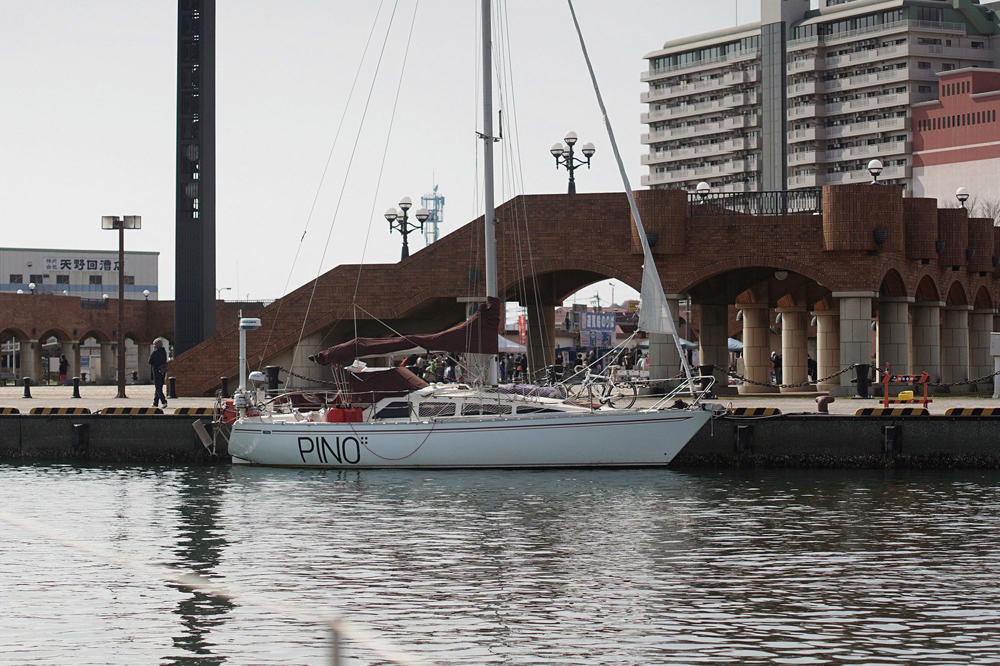Soon, we saw a group of Japanese men in work wear approaching the boat, it was the coastguard.
- “Not this again…”
We showed them our papers, everything they asked for. They were much more pleasant in person than on the radio, no unpleasantness what-so-ever. They were happy we were here and would point things out to us, places we should go see. Devine & I started to feel better then, we’d misunderstood their tone on the radio the night before. Japanese people are bound by rules, there is a set protocol that they need to adhere to and if a situation arises that doesn’t fit into that, they won’t know how to respond to it, or at least, they will be reluctant to act because the last thing they want is to go against the rules. They need to go through the proper channels, to make sure that their decision is okay with everyone. In the port of Shimizu, there are many people that are involved in allowing a boat into Port. This is what we had experienced last night, an overall reluctance to make a decision, a desire to stick to the rules.
The coastguard explained that customs officials would come and see us, only after their visit would we be allowed ashore. Devine & I looked at each other then, happy to hear that we weren’t really prisoners here, just victims of a very complex system. After customs came, we were free to roam!
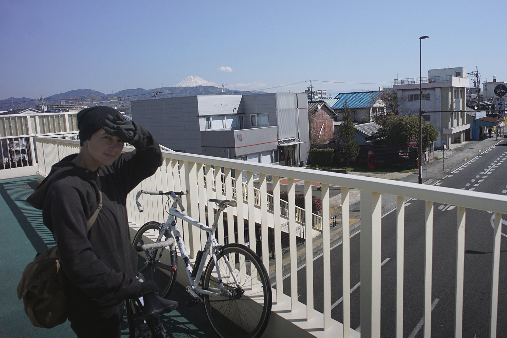They had allowed us to stay for 1 month on the public dock, to do repairs as needed. It wasn’t a bad place to be, very central and right near a mall. “S-pulse dream plaza” is a gigantic complex, complete with a Ferris wheel and Thomas the train rides. On the first few days we relied on that mall for internet, sitting in the “wifi area” while a Doraemon mascot screamed into a microphone, surrounded by a horde of kids. Early in the morning we’d sit outside, the mall only opened at 10am but the wifi was always on. We’d sit at a table and check our messages, as joggers did their morning runs around the basin.
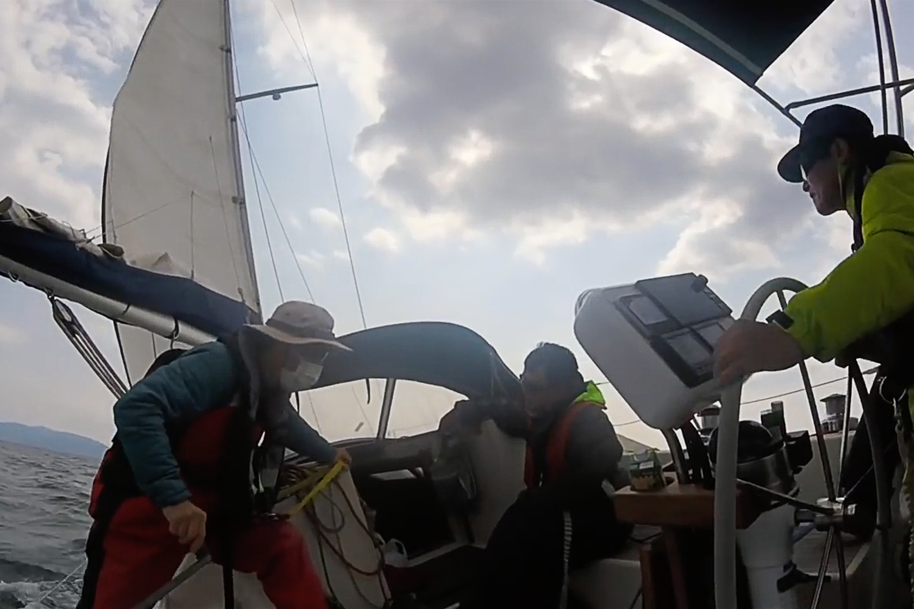From that time onward, we met a lot of locals. People would often walk near the boat and stop to say hello, this is how we met Kazupon and Nobu. These two local sailors were very welcoming, they came on the first day and invited us for lunch. We went to a delicious ‘all you can eat and drink place’, they assured us that there would be many vegan options for us. It was noon and we sat with them for 2 hours, eating and having an early nomihodai (all you can drink). They were excited to meet us and to hear stories of where we’d been. We too, were happy to finally get in touch with other Japanese sailors. They heard we were looking for a more permanent berth here in Shimizu and began calling friends on the spot to find one for us. We hadn’t asked for help but they insisted on it, saying they knew people who could, and would help. We couldn’t believe it. Later that week, they also invited us for a nabe night on Kazupon’s boat.
Kazupon was a dentist, he spoke good enough English and could help translate what Nobu was saying. Nobu was a retired electrician and professional sailor, we also learned later that he’s very good at making soba. The evening of the dinner on Kazupon’s boat, we agreed to a soba battle, for Devine to make homemade soba and to test it against Nobu san’s. We were all very drunk that night and it seemed like a good idea.
The day of the soba battle, we walked into Nobu's atelier with our mortar and pestle and our buckwheat berries, ready to dazzle him with our soba-making skills. Upon entering the room, we saw a soba-making station with a soba cutting knife laying over it, 'soba kiri' knives have a straight and long cutting edge to enable straight precise cut on the board to keep the width of the noodles consistent. The heavy weight of the knife assist in cutting of the noodles, usually with a slight forward cutting motion. This is a highly specialized blade, used only in soba-making, we realized then that our host wasn't a mere enthusiast, he was a true soba master.
The room was equipped with a large stone grinder and the biggest mixing bowl I’d ever seen. Around the room sat pieces of pottery, because Nobu was a man of many skills. He was an electrician, a sailor, a soba master and a potter. Needless to say we didn't win the soba battle, but we did learn a few tricks! We continued to do evenings with these two afterward, going to eat soba in restaurants or joining them for tempura parties on the marina docks.
We also met the crew of our dock neighbour Dawn treader, namely an engineer and amazing sailor named Masa. We became fast friends and did many activities together in Shimizu. In fact, on the first day he offered to help us with laundry (since the coin laundry was far) and even invited us over to his place so we have a proper warm shower. We'd only just met, and already we were in his appartment using his shower and eating his food.
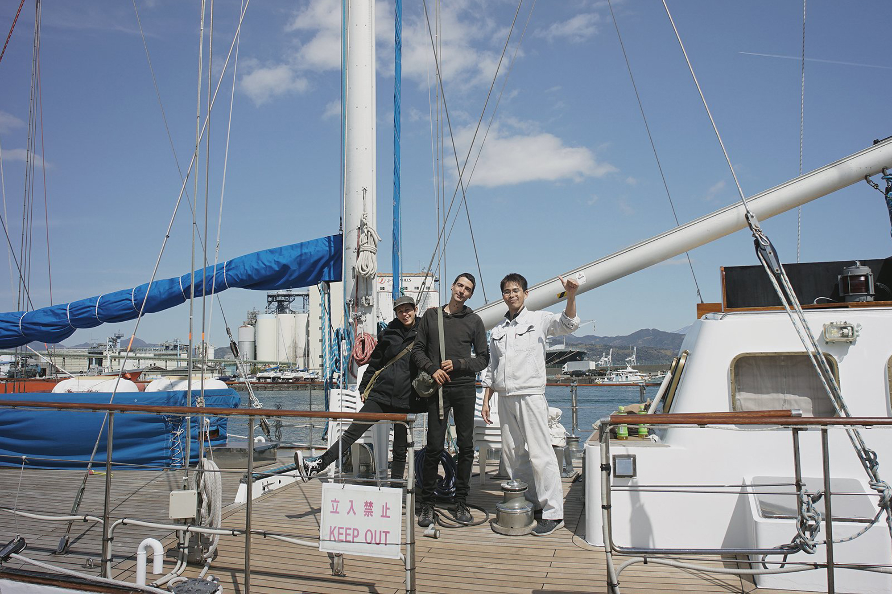On another occasion, Masa invited us aboard Dawn Treader for a meal and an evening of magic and shamisen-playing — I kid you not. We met his partner Yukari and his friend Kamo.
Like many Japanese people we’d met, everyone had some special skill or hidden talent. Kamo played the shamisen beautifully, his performance was interspersed with random acts of magic. It was surreal. We realized that night that magic isn't simply about doing the trick, it also requires a lot of acting and energy. Masa and Yukari also revealed some of their own talents, performing a cover of Kurenai by X Japan on the ukulele.
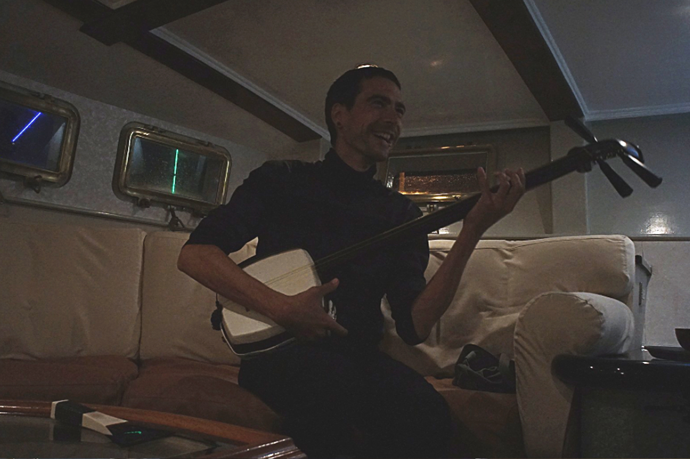Masa and Yukari treated us to many more fun outings, we attended a tea ceremony together. It was our first time seeing tea fields, rows upon rows of bushes lined up on a hill. The tea ceremony was simple, our host was dressed in a pink kimono and moved with incredible precision and grace.
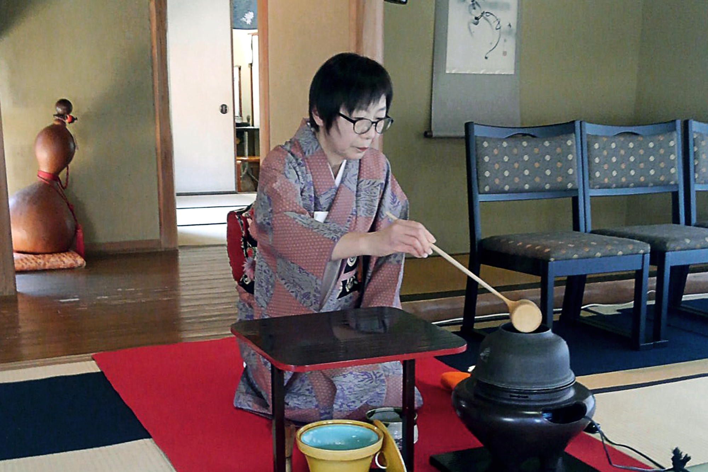Every movement was delicate and deliberate, there was no waste in it, no mistakes as if she’d done it over a thousand times. It was beautiful to watch. Our host served us a cup of warm matcha, along with a little red bean bun.
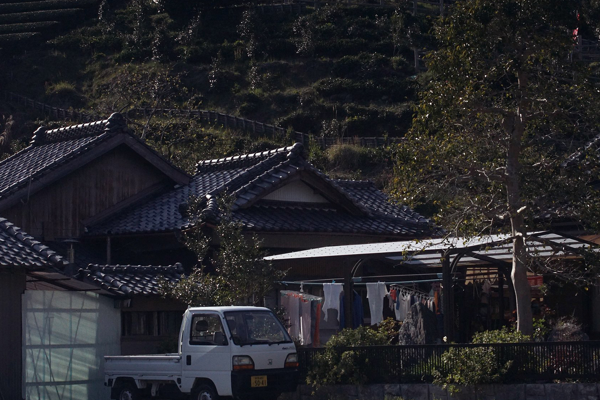This wasn’t our first time in Japan, but it was our first time experiencing Omotenashi, or hospitality. Everyone made sure we were happy and comfortable and were eager to take us out to introduce us to the various flavours of Japanese culture. We accepted every offer, humbled by their kindness and friendship. Most times our friends insisted on paying for the meals we had at restaurants, this made us feel uncomfortable because we aren’t used to it. In Montreal everyone always pays for their own share, no one expects special favors — only on very, very special occasions. Both of us looked at each other everytime we were treated to an expensive meal, we wondered if we should insist on paying our fair share but after trying many times we simply decided to just smile and say thank you.
They were happy to treat us to these experiences, that’s just how it is here in Japan. We kept all of these kind gestures in mind, hoping that we’ll find a way to repay them somehow. Although, we know that Japanese people don't do these things expecting something back, it's just them being kind, them wanting to share what they love of their culture with you. For once, we decided to let them do these things for us, to just be in the moment and to not feel guilty.
Between outings, we did repairs on Pino, ordering new slides for the main as well as a new toilet pump. We knew we wouldn't be able to stay here in Shimizu, even if we did enjoy being here. The public marina did not have berths for foreign boats, Kazupon and Nobu did try to get us in there but it was impossible. Our only option was Fujisan Hagoromo Marina in Orido. Like many other marinas in Japan, this marina only allows visitors to stay for 7 days per month. That was a problem for us. The weather out there was still too crazy, strong westerlies in the high 40's. We couldn't go out there even if we wanted to, heading south in such winds would be dangerous. At that point we thought of heading north instead, we did some research on marinas in the Yokohama and Tokyo area but these were too expensive. We quickly had to abandon that idea. A slip in that area would cost about 1300$ a month, that's more expensive than an appartment!
We knew we could stay on the concrete wall indefinitely, but the hard surface can be very damaging on a boat. We spent 2 weeks moored to that wall, our fender board ground thin by the barnacles and concrete. We had to leave the boat for a week to go to Tokyo but didn't want to leave it there, it's then that Nobu and Kazupon came through for us once again. They found us a spot at the local fishing club pontoon in Orido (34 59.243N 138 30.479E). The pontoon was old and rickety, but they assured us that all would be fine. We'd be able to leave the boat here, behind a locked gate during our absence. The best part? It was 100% free. We met the owner of the pontoon during a tempura party, he was more than happy to help us out. We ran into him many times during our stay on that dock, he would always come by and check up on us and to make sure everything was okay, especially during days when the wind was strong.
Leaving Pino is always worrisome, but we felt confident that this was a good place. We packed our bikes and left Shimizu to go to Tokyo. We wanted to spend time there with friends, to cycle through our favorite neighborhoods and to just relax for once, to not think of boat stuff at all. We landed at Shinagawa station in Tokyo, put our bikes back together and cycled over to our friend Chase's place west of Shibuya. On the way, we passed through many neighborhoods, by Meguro, Daikanyama, Shibuya and over to Shimo-Takaido.
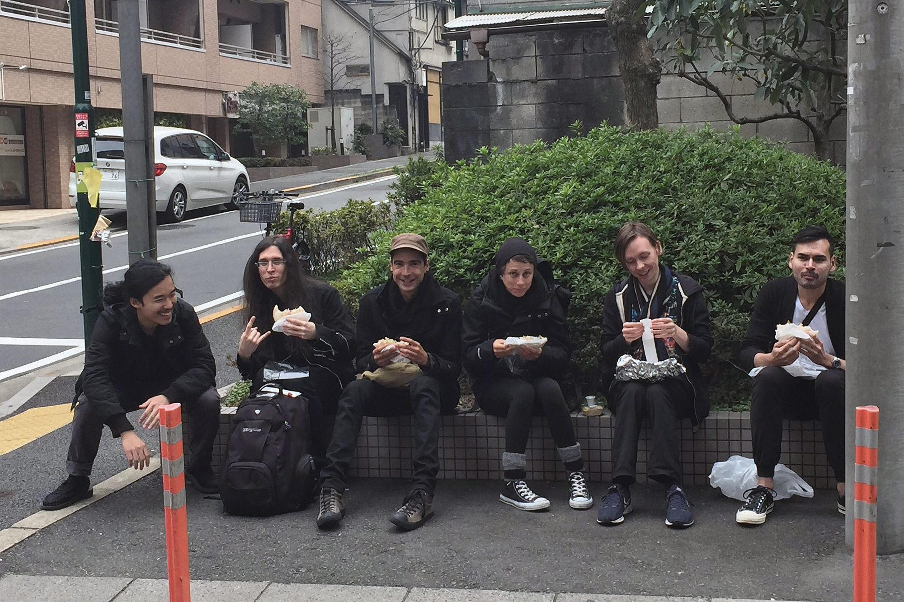During our short stay in Tokyo we went back to some of the places we liked, and found some new treasures, like Chabuzen, a place that makes amazing vegan tonkotsu-style ramen. It was still very cold then, but the sakura trees were beginning to bloom. Many streets were dotted with pink petals, when the wind would blow some of these would go flying and would swirl all around, it was like being in a snowglobe.
On our return from Tokyo we moved the boat into Fujisan Hagoromo Marina (34 59.316'N 138 30.564'E) for one week, to fill water and to get ready for our sail south to Minami Ise.
Hagoromo Marina wasn't cheap, but at least we had power there and could run our electric heater in the mornings (was still very cold then) and could take hot showers — ah, been so long since we've had that! What luxury. We also used our stay in this marina as an opportunity to get rid of a few items aboard Pino. It's very hard to dispose of steel, large objets or objects consisting of mixed materials in Japan, the marina would take care of it all for us. It was during this time that we said goodbye to our dinghy Iggy. Iggy, as you know, was a real hazard. It couldn't float anymore, and it couldn't be fixed. We'll miss you Iggy, you've served us well.
Shimizu is now one of our favorite places in Japan. We enjoyed local specialities like flavored yokan, and very much enjoyed cycling around Miho through the forests and industrial area. Everywhere we went in Shimizu, we could see Mount Fuji, we never did grow tired of seeing it.
I think it's safe to say we've seen Fujisan in every manner possible, with clouds obscuring its top (like it had a hat) or skirting it's middle or bottom. Some days, the sky was so clear that I could see snow blowing off its peak.
Our arrival here was challenging, but we pushed on, pulled through and everything worked out. Devine & I are stronger together, that is something I've always known but that is even more apparent in tough situations. We now have eyes set on the next port on our list: Shima Yacht Harbor in Minami-Ise.
Saying goodbye to this place wasn't easy, we made a lot of friends here. I'd like to thank Masa, Yukari, Joe, Kamo, Nobu and Kazupon for making our stay in Shimizu memorable. Every Japanese sailor we met expressed a desire to go out there, to push off the dock — in a more permanent way — and to travel the oceans. It makes us happy to hear that, because it means we'll likely run into each other again.
We made a video of our time in Shimizu, check it out here.
If you enjoy our content...
Support Us On Patreon